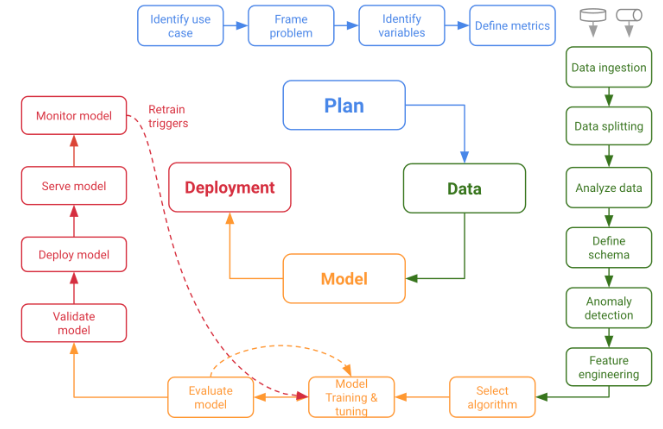

I, Daniel Steck, hereby state that I have not communicated with or gained information in any way from my classmates or anyone other than the Professor during this exam, and that all work is my own.
Introduction
This project was created within the modul “Programming languages for Data Science. Moreover, this project will follow the data science lifecycle, which consists of four main topics:
Plan
Data
Model
Deployment
The main focus within this project will be on the Deployment part.

Data Science Lifecycle
Plan
Identify use case
Frame the problem
Identify variables
Define metrics
Data
Within this chapter the data will be ingested and analyzed. Furthermore the data is also added into a SQL database and will be used for making queries.
SQL data analysis
Before the steps of the data science lifecycle are made, some SQL queries will be made on the data, in order to answer questions from our costumers.
First the DBI library is loaded and afterwards the data is added into the database.
Code
library (DBI)library(tidyverse)
Warning: Paket 'tidyverse' wurde unter R Version 4.2.3 erstellt
Warning: Paket 'tibble' wurde unter R Version 4.2.3 erstellt
Warning: Paket 'dplyr' wurde unter R Version 4.2.3 erstellt
── Attaching core tidyverse packages ──────────────────────── tidyverse 2.0.0 ──
✔ dplyr 1.1.1 ✔ readr 2.1.4
✔ forcats 1.0.0 ✔ stringr 1.5.0
✔ ggplot2 3.4.1 ✔ tibble 3.2.1
✔ lubridate 1.9.2 ✔ tidyr 1.3.0
✔ purrr 1.0.1
── Conflicts ────────────────────────────────────────── tidyverse_conflicts() ──
✖ dplyr::filter() masks stats::filter()
✖ dplyr::lag() masks stats::lag()
ℹ Use the conflicted package (<http://conflicted.r-lib.org/>) to force all conflicts to become errors
Code
# Connection to database con <-dbConnect(RSQLite::SQLite(), ":memory:")path_sql <-"https://raw.githubusercontent.com/DanielSteck/Project-Students-grades/main/exams.csv"# Write data "gapminder" into databasedbWriteTable(con, "exams_sql", read_csv(path_sql, show_col_types =FALSE))#show table in databasedbListTables(con)
[1] "exams_sql"
First look on the data
Code
SELECT*FROM exams_sql;
Displaying records 1 - 10
gender
race/ethnicity
parental level of education
lunch
test preparation course
math score
reading score
writing score
female
group D
some college
standard
completed
59
70
78
male
group D
associate’s degree
standard
none
96
93
87
female
group D
some college
free/reduced
none
57
76
77
male
group B
some college
free/reduced
none
70
70
63
female
group D
associate’s degree
standard
none
83
85
86
male
group C
some high school
standard
none
68
57
54
female
group E
associate’s degree
standard
none
82
83
80
female
group B
some high school
standard
none
46
61
58
male
group C
some high school
standard
none
80
75
73
female
group C
bachelor’s degree
standard
completed
57
69
77
The dataset contains 1000 observation with eight variables. Three out of these 8 variables are the students performance on exams.
Show the first 10 observations:
Code
SELECT*FROM exams_sqlLIMIT10;
Displaying records 1 - 10
gender
race/ethnicity
parental level of education
lunch
test preparation course
math score
reading score
writing score
female
group D
some college
standard
completed
59
70
78
male
group D
associate’s degree
standard
none
96
93
87
female
group D
some college
free/reduced
none
57
76
77
male
group B
some college
free/reduced
none
70
70
63
female
group D
associate’s degree
standard
none
83
85
86
male
group C
some high school
standard
none
68
57
54
female
group E
associate’s degree
standard
none
82
83
80
female
group B
some high school
standard
none
46
61
58
male
group C
some high school
standard
none
80
75
73
female
group C
bachelor’s degree
standard
completed
57
69
77
It can be seen that the columns should be renamed as there are e.g. spaces included:
Show all obervations which are parents_education “high_school” and have an average score in exams between 80 and 90. Result shall be ordered descending by avg_exam_score
Lets have a look on the first rows to get an expression of the data
Code
exams %>%slice(1:5)
# A tibble: 5 × 8
gender `race/ethnicity` parental level of educa…¹ lunch test preparation cou…²
<chr> <chr> <chr> <chr> <chr>
1 female group D some college stan… completed
2 male group D associate's degree stan… none
3 female group D some college free… none
4 male group B some college free… none
5 female group D associate's degree stan… none
# ℹ abbreviated names: ¹`parental level of education`,
# ²`test preparation course`
# ℹ 3 more variables: `math score` <dbl>, `reading score` <dbl>,
# `writing score` <dbl>
Before further steps can be made, the columns names need to be corrected, als they are including spaces and special characters. To remove those, the janitor package will be used.
Code
library(janitor)
Attache Paket: 'janitor'
Die folgenden Objekte sind maskiert von 'package:stats':
chisq.test, fisher.test
Code
exams <- exams %>%clean_names()
Beside the cleaning of the names, some variables shall be renamed in order to shorten the length.
The available data consist of 1000. The available features are gender, ethnic_group, parent_education, lunch, test_prep, math_score, reading_score, writing_score.
Missing data
Lets have a look on the description of the data to check the formats.
There are no missing numbers in the dataset. Three variables (scores in the exam) are numeric, the other variables are characters.
Format data
Lets have a look on the character columns and check if they should be formatted as factor.
Code
exams %>%count(gender,sort =TRUE)
# A tibble: 2 × 2
gender n
<chr> <int>
1 male 508
2 female 492
Code
exams %>%count(ethnic_group,sort =TRUE)
# A tibble: 5 × 2
ethnic_group n
<chr> <int>
1 group C 323
2 group D 257
3 group B 198
4 group E 143
5 group A 79
Code
exams %>%count(parent_education,sort =TRUE)
# A tibble: 6 × 2
parent_education n
<chr> <int>
1 some college 224
2 high school 215
3 associate's degree 204
4 some high school 177
5 bachelor's degree 105
6 master's degree 75
Code
exams %>%count(lunch,sort =TRUE)
# A tibble: 2 × 2
lunch n
<chr> <int>
1 standard 660
2 free/reduced 340
Code
exams %>%count(test_prep,sort =TRUE)
# A tibble: 2 × 2
test_prep n
<chr> <int>
1 none 656
2 completed 344
All character variables are having only a small amount of different levels. Therefore all character variables shall be transferred as factor.
Target of this project is to predict the students performance on exams. Therefore an additional column shall be added. This column shall include the average exam score of the students.
As all other variables are not numeric, no further new variables can be created.
Data overview
After succesfully cleaning, formatting and checking the data, lets have an overview of the data with the package skimr:
Code
library(skimr)skim(exams)
Data summary
Name
exams
Number of rows
1000
Number of columns
9
_______________________
Column type frequency:
factor
5
numeric
4
________________________
Group variables
None
Variable type: factor
skim_variable
n_missing
complete_rate
ordered
n_unique
top_counts
gender
0
1
FALSE
2
mal: 508, fem: 492
ethnic_group
0
1
FALSE
5
gro: 323, gro: 257, gro: 198, gro: 143
parent_education
0
1
FALSE
6
som: 224, hig: 215, ass: 204, som: 177
lunch
0
1
FALSE
2
sta: 660, fre: 340
test_prep
0
1
FALSE
2
non: 656, com: 344
Variable type: numeric
skim_variable
n_missing
complete_rate
mean
sd
p0
p25
p50
p75
p100
hist
math_score
0
1
67.81
15.25
15
58.00
68.00
79.25
100
▁▂▇▇▃
reading_score
0
1
70.38
14.11
25
61.00
70.50
80.00
100
▁▃▇▇▃
writing_score
0
1
69.14
15.03
15
59.00
70.00
80.00
100
▁▂▆▇▃
avg_score
0
1
69.11
14.03
20
59.58
69.67
79.33
100
▁▂▇▇▃
beschreiben!
Define features and outcome variable
In advance of the data splitting the definition of the target variable and the feature variables shall be made.
The performance in the exams shall be predicted, for this the average performance is sufficient. As the target is to predict the performance, the variables for math, reading and writing score must not be included into the feature list.
Before the data exploration can be started, the data shall be splitted into a training and test set.
To ensure that the training and test set is representative of the various categories of avg_score in the whole dataset, lets have a look on the histogram
Code
exams %>%ggplot(aes(avg_score)) +geom_histogram (bins=6) #tested several, 6 makes most sense
The splitted data shall included equally data from each of the bins.In order the have the same results for each run, a fix seed is set.
Target is to have 80% of the data for training and 20% for testing.
Code
library(rsample)set.seed(50) #for reproducability# split in train and test datadata_split <-initial_split (exams,prop =4/5,strat = avg_score,breaks =6)# Create train dataframetrain_data <-training(data_split)#create test data settest_data <-testing(data_split)
Moreover a validation set shall be created. This shall be used to validate the later models. After best models is used, based on the validation set, the model can be tested with the test data.
Warning: Using an external vector in selections was deprecated in tidyselect 1.1.0.
ℹ Please use `all_of()` or `any_of()` instead.
# Was:
data %>% select(y_label)
# Now:
data %>% select(all_of(y_label))
See <https://tidyselect.r-lib.org/reference/faq-external-vector.html>.
Analyze data
Define schema
Anomaly detection
Feature engineering
Model
Select algorithm
Model training & tuning
Evaluate model
Deployment
Validate model
Deploy model
Serve model
Monitor model
Source Code
---title: "Project_student_grades"subtitle: "Programming languages for Data Science"author: "Daniel Steck"date: "04.07.2023"format: html: code-fold: true code-tools: trueoutput: html_document: toc: true toc_depth: 3 number_sections: true---# Academic Honesty StatementI, Daniel Steck, hereby state that I have not communicated with or gained information in any way from my classmates or anyone other than the Professor during this exam, and that all work is my own.# IntroductionThis project was created within the modul "Programming languages for Data Science. Moreover, this project will follow the data science lifecycle, which consists of four main topics:- Plan- Data- Model- DeploymentThe main focus within this project will be on the **Deployment** part.# Plan## Identify use case## Frame the problem## Identify variables## Define metrics# DataWithin this chapter the data will be ingested and analyzed. Furthermore the data is also added into a SQL database and will be used for making queries.## SQL data analysisBefore the steps of the data science lifecycle are made, some SQL queries will be made on the data, in order to answer questions from our costumers.First the DBI library is loaded and afterwards the data is added into the database.```{r import_SQL_librarys}library (DBI)library(tidyverse)``````{r database_connection}# Connection to database con <-dbConnect(RSQLite::SQLite(), ":memory:")path_sql <-"https://raw.githubusercontent.com/DanielSteck/Project-Students-grades/main/exams.csv"# Write data "gapminder" into databasedbWriteTable(con, "exams_sql", read_csv(path_sql, show_col_types =FALSE))#show table in databasedbListTables(con)```### First look on the data```{sql connection=con}SELECT*FROM exams_sql;```The dataset contains 1000 observation with eight variables. Three out of these 8 variables are the students performance on exams.Show the first 10 observations:```{sql connection=con}SELECT*FROM exams_sqlLIMIT10;```It can be seen that the columns should be renamed as there are e.g. spaces included:```{sql connection=con}ALTERTABLE exams_sqlRENAMECOLUMN"race/ethnicity"TO ethnicity``````{sql connection=con}ALTERTABLE exams_sqlRENAMECOLUMN"parental level of education"TO parent_education``````{sql connection=con}ALTERTABLE exams_sqlRENAMECOLUMN"test preparation course"TO prep_course``````{sql connection=con}ALTERTABLE exams_sqlRENAMECOLUMN"math score"TO math_score``````{sql connection=con}ALTERTABLE exams_sqlRENAMECOLUMN"reading score"TO reading_score``````{sql connection=con}ALTERTABLE exams_sqlRENAMECOLUMN"writing score"TO writing_score;```Check the renamed columns```{sql connection=con}SELECT*FROM exams_sql```Lets have a look on the gender and their performance in math.```{sql connection=con}SELECT gender, "math_score"FROM exams_sql;```### Data ExplorationHow many different genders are in the dataset?```{sql connection=con}SELECTDISTINCT genderFROM exams_sql;```How many different ethnicities are in the dataset?```{sql connection=con}SELECTDISTINCT ethnicityFROM exams_sql;```How many different forms of parent_education are in the dataset?```{sql connection=con}SELECTDISTINCT parent_educationFROM exams_sql;```How many different lunch types are in the dataset?```{sql connection=con}SELECTDISTINCT lunchFROM exams_sql;```How many different types of preparation courses are in the dataset?```{sql connection=con}SELECTDISTINCT prep_courseFROM exams_sql;```How many observations are in the data set?```{sql connection=con}SELECTCOUNT(*) as rowsFROM exams_sql;```How many observations are available for each parent_education```{sql connection=con}SELECT parent_education,COUNT(parent_education) AS amount_of_observationsFROM exams_sqlGROUPBY parent_educationORDERBY amount_of_observations DESC;```How many students have a math score above 80?```{sql connection=con}SELECTCOUNT(*) as students_above_math_80FROM exams_sqlWHERE math_score >80;```Have a look at the obervations of students with more than 90 in reading score```{sql connection=con}SELECT*FROM exams_sqlWHERE reading_score >90;```Check the obervations of all females with more than 90 in writing score. The result shall be ordered by writing score (decreasing)```{sql connection=con}SELECT*FROM exams_sqlWHERE gender ="female"AND writing_score>90ORDERBY writing_score DESC;```Check all observations of students with more than 90% in one of the exams and made NO prep_course```{sql connection=con}SELECT*FROM exams_sqlWHERE prep_course ="none"AND (math_score>90OR writing_score>90OR reading_score>90);```What are the average exam scores of the different ethnicies?```{sql connection=con}SELECT ethnicity,AVG(math_score) as avg_math,AVG(reading_score) as avg_read,AVG(writing_score) as avg_writeFROM exams_sqlGROUPBY ethnicity;```What are the best exam scores?```{sql connection=con}SELECTMAX(math_score) as max_math,MAX(reading_score) as max_read,MAX(writing_score) as max_writeFROM exams_sql;```What are the worst exam scores?```{sql connection=con}SELECTMIN(math_score) as min_math,MIN(reading_score) as min_read,MIN(writing_score) as min_writeFROM exams_sql;```What are the average exam scores for the genders?```{sql connection=con}SELECT gender, (AVG(math_score) +AVG(reading_score) +AVG(writing_score)) /3as avg_exams_scoreFROM exams_sqlGROUPBY gender;```Show all obervations which are parents_education "high_school" and have an average score in exams between 80 and 90. Result shall be ordered descending by avg_exam_score```{sql connection=con}SELECT gender, ethnicity, parent_education, lunch, prep_course, (math_score + reading_score + writing_score) /3as avg_exams_scoreFROM exams_sqlWHERE parent_education ="high school"AND avg_exams_score BETWEEN80AND90;```Show all male ethnicities which have an average_exams score less than 70. Order the avg_exams_score ascending.```{sql connection=con}SELECT ethnicity, (AVG(math_score) +AVG(reading_score) +AVG(writing_score)) /3as avg_exams_scoreFROM exams_sqlWHERE gender="male"GROUPBY ethnicityHAVING avg_exams_score <70ORDERBY avg_exams_score;```## Data ingestion### Data ImportFirst of all the data will be imported```{r read_csv}library(tidyverse)path <-"https://raw.githubusercontent.com/DanielSteck/Project-Students-grades/main/exams.csv"exams <-read_csv(path, show_col_types =FALSE)```### Clean DataLets have a look on the first rows to get an expression of the data```{r first_rows}exams %>%slice(1:5)```Before further steps can be made, the columns names need to be corrected, als they are including spaces and special characters. To remove those, the janitor package will be used.```{r janitor}library(janitor)exams <- exams %>%clean_names()```Beside the cleaning of the names, some variables shall be renamed in order to shorten the length.```{r rename_columns}exams <-rename(exams, ethnic_group = race_ethnicity)exams <-rename(exams, parent_education = parental_level_of_education)exams <-rename(exams, test_prep = test_preparation_course)```The available data consist of `r nrow(exams)`. The available features are `r names(exams)`.### Missing dataLets have a look on the description of the data to check the formats.```{r glimpse}glimpse (exams)```Are there any missing data? lets check it:```{r missing_values_graphic}library(visdat)vis_dat(exams)```Alternative method for missing data:```{r missing_values_num}is.na(exams) %>%colSums()```There are no missing numbers in the dataset. Three variables (scores in the exam) are numeric, the other variables are characters.### Format dataLets have a look on the character columns and check if they should be formatted as factor.```{r levels_gender}exams %>%count(gender,sort =TRUE)``````{r levels_ethnic_group}exams %>%count(ethnic_group,sort =TRUE)``````{r levels_parent_education}exams %>%count(parent_education,sort =TRUE)``````{r levels_lunch}exams %>%count(lunch,sort =TRUE)``````{r levels_test_prep}exams %>%count(test_prep,sort =TRUE)```All character variables are having only a small amount of different levels. Therefore all character variables shall be transferred as factor.```{r char_to_factor}exams <- exams %>%mutate(across(where(is.character), as.factor))```### Create new variablesTarget of this project is to predict the students performance on exams. Therefore an additional column shall be added. This column shall include the average exam score of the students.```{r new_column_avg_score}exams <- exams%>%mutate (avg_score = (math_score + reading_score + writing_score)/3)```As all other variables are not numeric, no further new variables can be created.### Data overviewAfter succesfully cleaning, formatting and checking the data, lets have an overview of the data with the package *skimr*: ```{r skimr}library(skimr)skim(exams)```**beschreiben!**### Define features and outcome variableIn advance of the data splitting the definition of the target variable and the feature variables shall be made.The performance in the exams shall be predicted, for this the average performance is sufficient. As the target is to predict the performance, the variables for math, reading and writing score must not be included into the feature list.```{r outcome_and_features}y_label <-'avg_score'features <-c('gender', 'ethnic_group', 'parent_education', 'lunch', 'test_prep')X <- exams %>%select(all_of(features))y <- exams %>%select(all_of(y_label))```## Data splittingBefore the data exploration can be started, the data shall be splitted into a training and test set.To ensure that the training and test set is representative of the various categories of `avg_score` in the whole dataset, lets have a look on the histogram```{r bins_target_variable}exams %>%ggplot(aes(avg_score)) +geom_histogram (bins=6) #tested several, 6 makes most sense ```The splitted data shall included equally data from each of the bins.In order the have the same results for each run, a fix seed is set.Target is to have 80% of the data for training and 20% for testing.```{r train_test_split}library(rsample)set.seed(50) #for reproducability# split in train and test datadata_split <-initial_split (exams,prop =4/5,strat = avg_score,breaks =6)# Create train dataframetrain_data <-training(data_split)#create test data settest_data <-testing(data_split)```Moreover a validation set shall be created. This shall be used to validate the later models. After best models is used, based on the validation set, the model can be tested with the test data.```{r validation_set}set.seed(12)cv_folds <-vfold_cv(train_data,v=5,strata = y_label,breaks =6)```## Analyze data## Define schema## Anomaly detection## Feature engineering# Model## Select algorithm## Model training & tuning## Evaluate model# Deployment## Validate model## Deploy model## Serve model## Monitor model